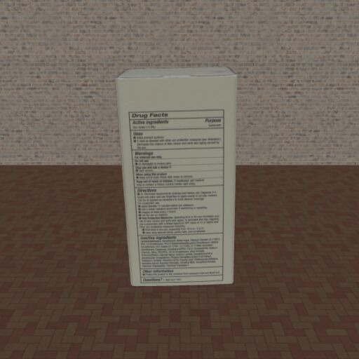
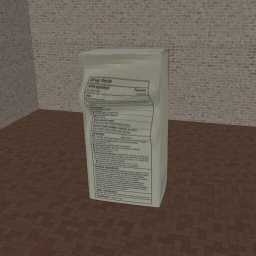
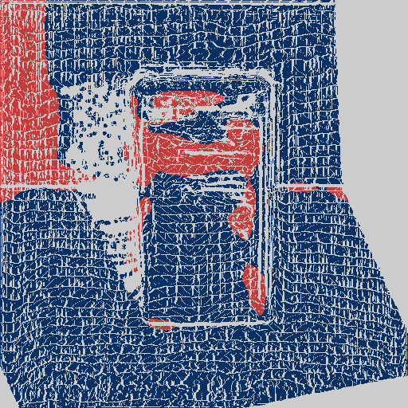
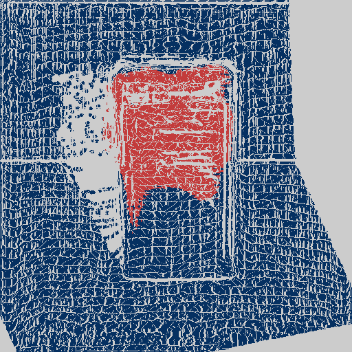
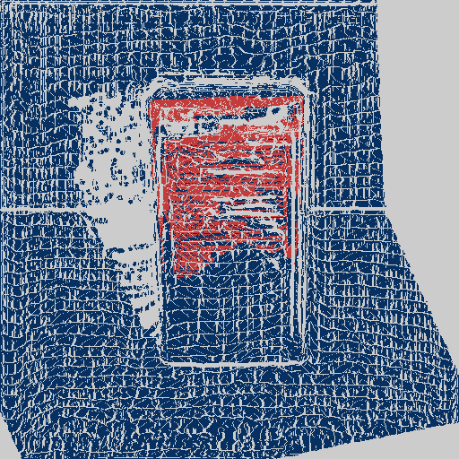
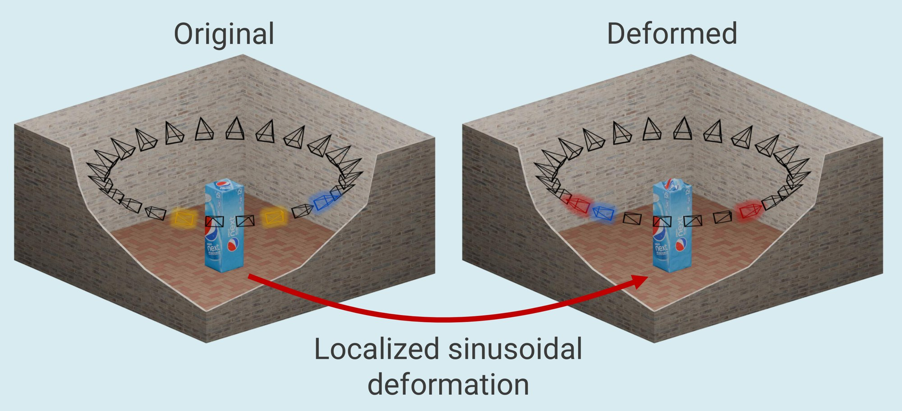
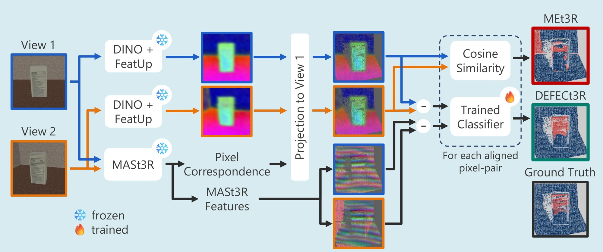

Two views of the same object look plausible in isolation, yet they are geometrically inconsistent with one another. Existing consistency methods such as MEt3R produce a global score and respond to large consistent regions. Our DEFECt3R directly localizes the inconsistency at the pixel level (red = inconsistent, blue = consistent).
Novel view synthesis (NVS) models can produce realistic new views of the same scene from different viewpoints. However, these generated views are not always geometrically consistent with one another. Multi-view (MV) consistency has shown promise as a tool for evaluating these NVS models. Its potential for multimedia forensics, however, remains largely unexplored, particularly for localizing geometric inconsistencies across wide-baseline image pairs. To enable research in this direction, we introduce DeformView, a wide-baseline MV dataset with pixel-level annotations of geometric inconsistencies. Using DeformView, we evaluate state-of-the-art MV consistency-scoring methods and show that approaches developed for NVS evaluation transfer poorly to the forensic task of geometric inconsistency localization. To address this limitation, we propose DEFECt3R, a lightweight learning-based classifier that uses cross-view feature relationships to localize geometric inconsistencies at the pixel level. By learning from explicit supervision, including hard negatives from geometrically consistent yet deformed views, DEFECt3R improves localization performance and substantially reduces false positives compared to existing consistency-scoring methods. Ablation experiments further show that both feature representations and correspondence quality contribute to localization performance. Overall, our findings demonstrate that MV geometric consistency is a promising yet underexplored signal for multimedia forensics and establish a benchmark and baseline for geometric inconsistency localization in wide-baseline MV image pairs.
Generative models can create realistic novel views of a scene, enabling fake multi-view image sets. However, keeping these views geometrically consistent is challenging: real photographs share one physical geometry, generative models are not constrained to it. This weakness can serve as a forensic signal, yet it remains largely unexplored, for two reasons.
No dataset combines:
Prior datasets annotate at object level, or warp each image independently, so the same deformation can never be seen consistently from two viewpoints.
State-of-the-art methods either:
They were designed to evaluate novel view synthesis, not to tell whether and where two views contradict each other.
We apply a localized sinusoidal deformation directly to 3D object meshes from Google Scanned Objects, and render original and deformed meshes in a shared textured room. Because the deformation lives in 3D, it can be rendered consistently from any viewpoint, yielding exact pixel-level ground truth.

Each object is rendered from a ring of 24 cameras around both the original and the deformed mesh. The highlighted cameras show one example of each pair type: blue = positive, yellow = negative, red = hard negative.
One view of the original and one of the deformed mesh. The views are inconsistent exactly in the deformed region, given by the ground-truth mask.
Two views of the original mesh. The pair is consistent and should produce no inconsistency response.
Two views of the same deformed mesh. Unusual geometry, yet consistent: methods must verify cross-view disagreement, not just spot deformations.
Split at object level into train (75%), validation (15%) and test (10%), so no object appears in more than one split.
MEt3R treats the dissimilarity of aligned features as inconsistency. But features also differ for geometrically consistent deformations, or when a correspondence error compares unrelated regions. DEFECt3R therefore learns whether aligned DINO and MASt3R feature differences reflect a genuine geometric inconsistency.

Both views are encoded with DINO + FeatUp; MASt3R estimates pixel correspondences to project View 2 onto View 1. Where MEt3R takes the cosine similarity of the aligned features, DEFECt3R feeds the DINO and MASt3R feature differences into a small trained classifier. All backbones stay frozen.
For each aligned pixel pair we take the difference of the L2-normalized DINO features (384-d) and MASt3R features (24-d). The DINO difference is projected to 64-d (384→128→64), concatenated with the MASt3R difference, and a second MLP (88→64→1) predicts an inconsistency probability. Each pixel is classified independently, so no spatial aggregation is needed: the classifier has only ~63k trainable parameters.
The classifier is trained on DeformView with focal loss, using all foreground pixels and a 10% subsample of the background. Because the supervision includes hard negatives (deformed–deformed pairs), the model learns to separate true cross-view disagreement from visual deformation and from reprojection artifacts caused by correspondence errors.
Consistency-scoring methods built for novel view synthesis (NVS) evaluation transfer poorly to forensic localization. DEFECt3R outperforms MEt3R and TSED at both the pixel and the pair level, while drastically reducing false positives.
More accurate inconsistency localization
AUCAUC: area under the ROC curve over all foreground pixels of the test set. It measures how well inconsistent pixels are ranked above consistent ones, independent of a threshold. 0.5 = chance. 0.60 → 0.76
Suppresses false positives from correspondence errors
FPRFalse-positive rate: the fraction of pixels flagged as inconsistent in pairs that are in fact fully consistent. Lower is better. 47% → 1.5%
original–original pairs
Distinguishes visual deformations from inconsistencies
FPRFalse-positive rate inside the deformed region of deformed–deformed pairs: the region looks unusual, but is geometrically consistent. Lower is better. 61% → 1.5%
deformed regions
Predictions on DeformView test pairs, shown from the perspective of View 1 (red = inconsistent, blue = consistent, yellow = object outline). Switch between MASt3R-estimated and ground-truth camera poses at any time, and hover Peek DINO only on a DEFECt3R prediction to compare it with the variant trained without MASt3R features.
With MASt3R poses, large viewpoint differences sometimes cause severely wrong correspondences, so unrelated object parts are compared. MEt3R flags these as inconsistent, while DEFECt3R is able to suppress many of them.
Results on the DeformView test set, for all pairs and per pair type. Background pixels are excluded. For the all-negative pair types, the false-positive rate (FPR) is reported. Best and second best are marked.
| MEt3R | DEFECt3R (ours) | |||||
|---|---|---|---|---|---|---|
| Features | DINO | DINO | DINO+MASt3R | DINO | DINO | |
| Poses | MASt3R | GT | MASt3R | MASt3R | GT | |
| All pairs | AUC ↑ | 0.595 | 0.595 | 0.759 | 0.732 | 0.809 |
| F1 ↑ | 0.063 | 0.051 | 0.168 | 0.145 | 0.207 | |
| Precision ↑ | 0.033 | 0.027 | 0.140 | 0.109 | 0.184 | |
| Recall ↑ | 0.640 | 0.390 | 0.208 | 0.218 | 0.238 | |
| Positive | AUC ↑ | 0.583 | 0.571 | 0.683 | 0.661 | 0.723 |
| F1 ↑ | 0.169 | 0.133 | 0.205 | 0.197 | 0.235 | |
| Precision ↑ | 0.098 | 0.080 | 0.202 | 0.180 | 0.232 | |
| Recall ↑ | 0.640 | 0.390 | 0.208 | 0.218 | 0.238 | |
| Hard negative | FPR ↓ deformed | 0.613 | 0.345 | 0.015 | 0.016 | 0.017 |
| FPR ↓ rest | 0.488 | 0.290 | 0.020 | 0.031 | 0.009 | |
| Negative | FPR ↓ | 0.470 | 0.293 | 0.015 | 0.030 | 0.007 |
Recall is identical for all pairs and positive pairs, since positive pixels only occur in positive pairs. DEFECt3R is more conservative than MEt3R: lower recall, but higher precision. Both better correspondences and MASt3R features help, the former the most.
One decision per image pair: is it consistent or not? DEFECt3R's pixel scores are aggregated with the 99th percentile. TSED and MEt3R stay close to chance, independently of which aggregation or correspondences are used.
| TSED | MEt3R | DEFECt3R (ours) | |||||||
|---|---|---|---|---|---|---|---|---|---|
| Features | DINO | DINO | DINO | DINO | DINO+MASt3R | DINO | DINO | ||
| Aggregation | Mean | Mean | 99th | 99th | 99th | 99th | 99th | ||
| Poses | MASt3R | GT | MASt3R | GT | MASt3R | GT | MASt3R | MASt3R | GT |
| AUC ↑ | 0.484 | 0.520 | 0.500 | 0.516 | 0.513 | 0.516 | 0.713 | 0.679 | 0.737 |
| F1 ↑ | 0.468 | 0.486 | 0.482 | 0.480 | 0.481 | 0.478 | 0.537 | 0.528 | 0.558 |
| Precision ↑ | 0.316 | 0.325 | 0.319 | 0.317 | 0.319 | 0.314 | 0.394 | 0.404 | 0.510 |
| Recall | 0.904 | 0.958 | 0.992 | 0.993 | 0.977 | 0.993 | 0.843 | 0.764 | 0.616 |
Recall is not highlighted: with AUCs near 0.5, the F1-optimal threshold of TSED and MEt3R simply flags almost every pair as inconsistent, leading to very high recalls.
@inproceedings{Staelens_2026_DFF,
author = {Staelens, Xander and Loos, Alb\'{e}ric and Ramlot, Bert and Mareen, Hannes and Lambert, Peter and Van Wallendael, Glenn},
title = {Geometric Inconsistency Localization in Multi-View Image Sets},
booktitle = {Proceedings of the 2nd Deepfake Forensics Workshop: Detection, Attribution, Recognition, and Adversarial Challenges in the Era of AI-Generated Media (DFF '26)},
year = {2026},
publisher = {ACM},
address = {Rio de Janeiro, Brazil},
doi = {10.1145/3840473.3840513}
}This work was funded in part by IDLab (Ghent University – imec), by Flanders Innovation & Entrepreneurship (VLAIO), by Research Foundation – Flanders (FWO) (1SA9O26N & G0A2523N), and by the European Union. DeformView is built on Google Scanned Objects, and DEFECt3R builds on MEt3R, MASt3R, DINO and FeatUp. This project page was adapted from the Nerfies project page.